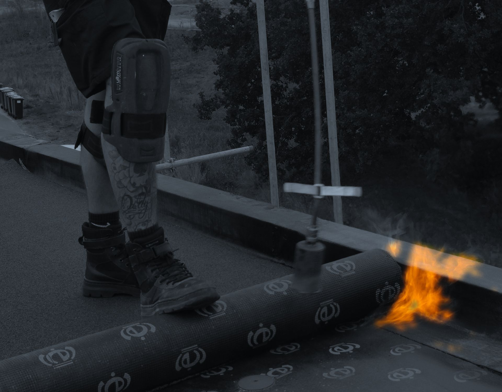
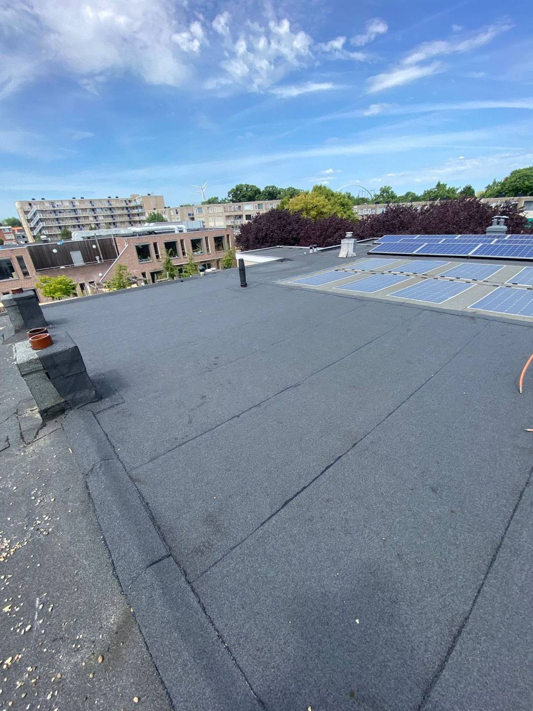

Renovatie en reparatie
Van een losse pan of verstopte goot tot een compleet nieuw dak, met nieuw dakbeschot en isolatie waar dat nodig is.
Heldere prijsopgave vooraf, vakwerk met garantie.
Renovatie, reparatie of een lekkage die nu moet stoppen. DakKey werkt op platte daken, pannendaken en schoorstenen in West- en Midden-Brabant en verder.
Een schoorsteen is vaak de zwakste plek op je dak. Regen, wind en vorst slijten de voegen sneller dan de rest. Dit is een klus van ons, voor en na.

Van een losse pan of verstopte goot tot een compleet nieuw dak, met nieuw dakbeschot en isolatie waar dat nodig is.
Heldere prijsopgave vooraf, vakwerk met garantie.Voegwerk, loodslabben, afdekkappen of de hele schoorsteen weg. Ook dichtmaken en isoleren, bijvoorbeeld bij een warmtepomp.
Veilig, netjes en waterdicht afgewerkt.Oude of kapotte pannen eruit, nieuwe panlatten en folie erin. We denken mee over kleur, vorm en materiaal.
Ook nokvorsten, vorstband en kilgoten.Nieuwe dakbedekking in bitumen of EPDM, met isolatie volgens de nieuwste normen. Duurzame bedekking gaat tot 40 jaar mee.
Ook koepels, doorvoeren en voorbereiding op zonnepanelen of groendak.Een waterafstotende, ademende laag op pannen of bitumen. Dat houdt mos en vuil tegen en is goedkoper dan een heel nieuw dak.
We beoordelen eerst of je dak ervoor geschikt is.We controleren je dak van nok tot goot: pannen, lood, goten, schoorsteen, doorvoeren en isolatie.
Je krijgt een helder rapport met foto's en advies.Je belt of mailt, en we plannen snel een inspectie zodat we weten wat er speelt.
Eerlijk advies en een vrijblijvende offerte op maat, zonder verrassingen achteraf.
We plannen in overleg, met oog voor jouw agenda én voor het weer.
Onze dakdekkers werken veilig, met topmaterialen, en laten alles netjes achter.
We lopen samen alles na. Je krijgt garantie op het werk en tips voor onderhoud.
DakKey ontstond toen drie zelfstandige dakdekkers hun eenmanszaken samenvoegden. Daardoor kunnen we grotere projecten aan en is er altijd iemand beschikbaar.
Wij zeggen wat we doen en doen wat we zeggen. Geen vage offertes, wel afspraken waar je op kunt bouwen.
Onze mensen zijn getraind om veilig en verantwoord op hoogte te werken.
Ontstaat er onverhoopt schade tijdens het werk, dan ben je verzekerd.
Grotere renovaties en nieuwbouw zijn gedekt tijdens het hele bouwproces.
Elke klus is maatwerk. Na de inspectie krijg je een eerlijke, duidelijke offerte, zonder verrassingen achteraf.
Ja, als wij het werk mogen aanbieden of uitvoeren. Heb je een officieel rapport nodig bij aankoop of verkoop van een woning, dan rekenen we daar een vergoeding voor.
Let op lekkages, losse pannen, mos of versleten dakbedekking. We komen graag kijken en vertellen je eerlijk hoe je dak ervoor staat.
Zeker. Bij stormschade of lekkage komen we zo snel mogelijk, vaak nog dezelfde dag.
We stemmen vooraf af of je installateur de demontage en hermontage doet. Kan dat niet, dan regelen we het in overleg zelf.
Breda / Etten‑Leur / Oosterhout / Chaam / Bergen op Zoom / Steenbergen / Roosendaal / Oudenbosch / Tilburg / Goirle / Gilze en Rijen / Dongen / Waalwijk / Kaatsheuvel / Waspik / Raamsdonksveer / en ook Utrecht, Zuid‑Holland en Zeeland
Maandag tot en met zaterdag
08:00–20:00